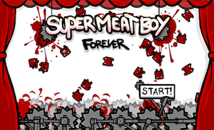
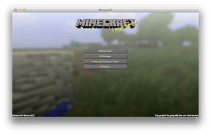
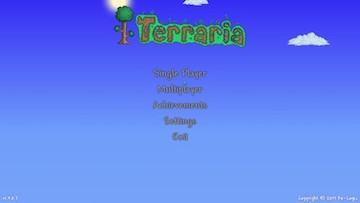

Creating a menu screen
When you start to play a game the first thing you notice is a menu screen. This is usually a screen that has the games title, perhaps who made it, colorful graphics, possibily music and most importantly a play button. Pressing the play button usually starts the game playing.
Take a look at these popular games and what their menu screens look like:
  
After looking at these examples, let's make a menu screen of our own.